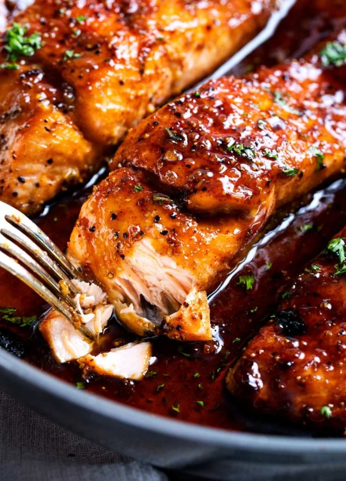

Salmon

Description
This is a 10 min dish, that you and your family will love
Pan seared Teriyaki glazed salmon with a few ingredients you already have in the pantry, and takes
10 mins to cook.
Ingredients
- 2 Salmon Filets
- 2 Cloves Garlic
- tbsp Sesame Oil
- 4 tbsp Soy Sauce
- 4 tbsp Maple Syrup
Steps
- Heat pan on medium heat
- Pour in the sesame oil
- Heat the sesame oil for 30 seconds
- Mince the garlic cloves and add them to the oil
- Leave the garlic in the oil till caramelized
- Add the soy sauce to the pan (we are making the teryaki glaze)
- Add the maple syrup to the pan
- Continuously mix on medium heat till the sauce bubbles
- Once it is done bubbling, turn down the heat to medium low
- Add the Salmon to the pan and cover for 2 mins
- After 2 mins check on the salmon and start basting it with the sauce in the pan
- Continue to baste while the salmon is cooking, another 5-8 mins
- Serve the salmon with a side of veggies or rice